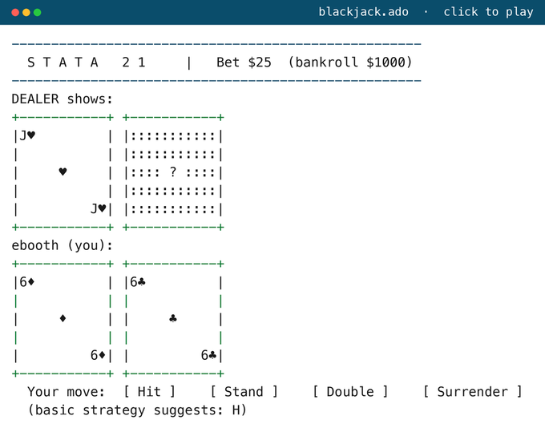
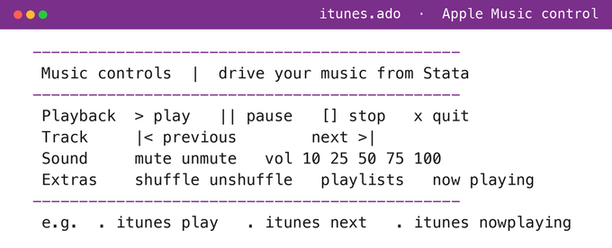
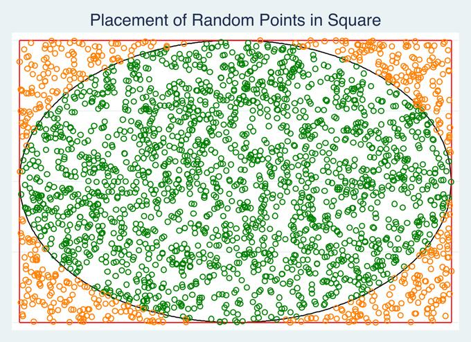
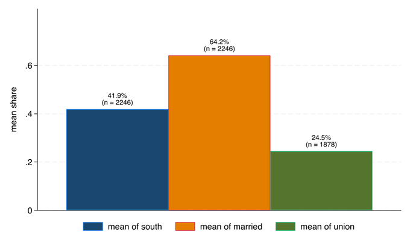
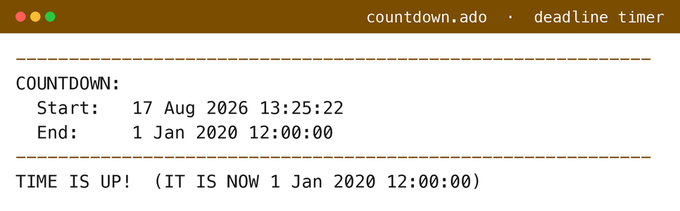
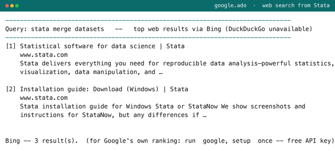

A working library of open-source tools I've built for research, evaluation, and data workflows — mostly in Stata and Python. Search or pick a problem below, then click a name for the source on GitHub, or the SSC tag to install from the SSC archive. Full index at github.com/ericabooth.
Publish interactive HTML/JS pages — charts, dashboards, tables, and maps — straight from a Stata do-file.
Call web APIs, read/write Google Sheets, work off Google Drive, pull in R data, query an LLM, and convert or edit any file — without leaving Stata.
Scrapers and downloaders for Texas education, health price-transparency, and Stata package archives.
Match and validate records, combine and reshape files, rebuild variables, generate codebooks, track data lineage, and de-identify data for safe public release.
Estimation and inference tools for evaluation work — matching, shrinkage, multilevel R-squared, simulation, conformal and nonparametric methods — plus applied research and replication materials.
Scaffold and back up whole analysis projects, install what a do-file needs, generate timesheets, auto-build multicam video timelines, and convert documents.
A draft book on applied program evaluation in Stata, an NSF-funded evaluation workshop, and a tool for building interactive SMCL help files and slides.
Fun experiments and personal Stata scripts that live in my adopath but aren't packaged on GitHub or SSC. Browse them in a shared Google Drive folder; in Stata, type which cmd to see any command's syntax.




graph bar/hbar with its mean as a % label (and n), honoring by() and over().

logo option reprints the Stata banner.obs, observations) whose share of missing values passes a threshold..tex file to a PDF straight from Stata (macOS or Windows).Source for everything is at
github.com/ericabooth →;
all my Stata modules are also on RePEc / SSC →.
A SSC tag means the package installs with ssc install <name>.